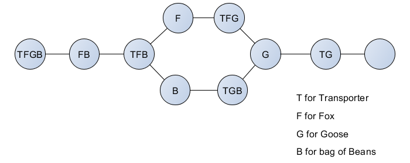
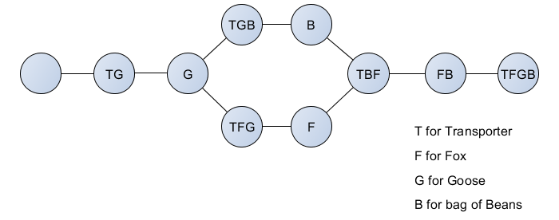

A river crossing puzzle is a type of transport puzzle in which the object is to carry items from one river bank to another. The difficulty of the puzzle may arise from restrictions on which or how many items can be transported at the same time, or from which or how many items may be safely left together. The setting may vary cosmetically, for example, by replacing the river by a bridge.
The story:
Once upon a time a farmer went to market and purchased a fox, a goose, and a bag of beans. On his way home, the farmer came to the bank of a river and rented a boat. But in crossing the river by boat, the farmer could carry only himself and a single one of his purchases - the fox, the goose, or the bag of beans.
If left together, the fox would eat the goose, or the goose would eat the beans.
The farmer's challenge was to carry himself and his purchases to the far bank of the river, leaving each purchase intact. How did he do it?
Graph-Theoretic Analysis:
The farmer (T for transporter) must transport a fox (F), a goose (G) and a bag of beans (B) from one side of a river to another using a boat which can only hold one item in addition to the farmer. For edibility reasons, the fox cannot be left alone with the goose, and the goose cannot be left alone with the beans. So we can't have F and G together and G and B together.
To draw the graph, let's have graph nodes listing items on one side of the river (T F G B), the edges will be the transport transition. The only possibles transitions are:
* TFGB -> FB
* TFB (the transporter comes back) -> B
-> F
* B -> TGB
* F -> TFG
Then we always fing G alone, then TG, then nobody
The departure river side graph is :

The arrival river side graph is : 
These two graphs are inverted (right/left inversion from the other one), as there is only one graph of possible transitions, which is the same at the both river sides. You can draw them simultaneously as two nodes at the same position on the graph must contains all items.
There is two solutions to the problem, after leaving the goose alone on the arrival river side, the farmer can leave either the fox either the beans on the departure river side.